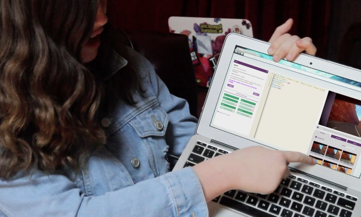
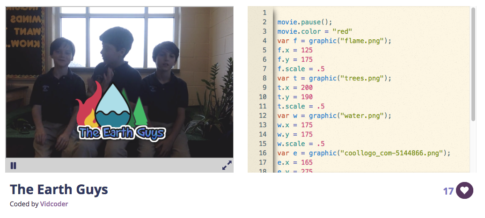

Case Study
A one-hour beginner coding lesson

This was a standalone lesson designed for Code.org's Hour of Code initiative, timed to Earth Day 2018. The brief was tight: one hour, beginner coders, a clear environmental theme (that year's Earth Day campaign was "End Plastic Pollution"), and a finished project students could publish and share. The result was a tutorial that taught core JavaScript concepts (variables, arrays, loops, and randomness) through the lens of the Great Pacific Garbage Patch.
Before settling on the final concept, several directions were explored and evaluated.
A zoom sequence inspired by the Eames Office "Powers of Ten", scaling from space down to individual pieces of plastic, was appealing because it would use loops naturally and create a striking visual. It was set aside because the technical complexity was too high for a one-hour beginner lesson, and the concept didn't leave room for student personalization.
A recycling game was considered and dismissed quickly: interactive mechanics would eat most of the hour before students had written meaningful code.
A lesson focused on the history of Earth Day, and its founder Gaylord Nelson, would have suited a history classroom but didn't generate a creative output students could make their own.
What remained was the simplest and most direct idea: let students build a visual representation of plastic pollution using emoji as stand-ins for real objects they recognize from their own lives. Emoji are immediately legible to the age group. Asking students to choose which plastic items to represent gives the lesson a moment of genuine reflection (what plastic do I actually use?) before the code begins. And the data structure that holds those items, an array, is a concept students would encounter again in any further coding they did. The theme and the technology were genuinely aligned.
An Hour of Code lesson has hard constraints. Sixty minutes is not much time to introduce programming to a student who has never written a line of code, produce something that feels finished and meaningful, and connect that experience to a real-world issue. Every design decision had to serve all three goals simultaneously.
The additional constraint of a social-impact theme added a layer of complexity: the lesson needed to feel genuinely about plastic pollution, not like an environmental wrapper bolted onto a generic coding exercise.
The lesson follows a four-phase structure adapted from the 5E instructional model.
Engage (10 minutes) The lesson opens with a short animation (Gorilla in the Greenhouse) that explains how everyday consumer plastic ends up in the Great Pacific Garbage Patch. This does two things: it gives students enough context to care about what they're about to build, and it establishes that the Garbage Patch is not abstract. It is made of objects like theirs.
Explore (40 minutes) Students work through the Vidcode tutorial in pairs. Pairing is deliberate: it reduces the anxiety of a first coding experience, distributes problem-solving, and mirrors how programmers actually work. The tutorial is structured as a scaffolded sequence of steps, each introducing one new concept, with tiered hints available at each stage (ranging from a nudge toward the right approach to a full code reveal).
The tutorial moves through: adding a video backdrop, applying visual filters, creating an array of plastic emoji chosen by the student, writing a while loop to display them, using Math.random() to scatter and resize them across the screen, and adding text overlays with an environmental message.
The progression is careful. Each concept introduced is immediately used to do something visible and satisfying. Arrays are introduced not as an abstract data structure but as a list of the plastic things you throw away. Loops are introduced as the thing that makes twenty pieces of garbage appear instead of one. Math.random() is introduced as the thing that makes the pollution look messy and real instead of tidy and fake.

Extend (embedded in Explore) As students finish, a class discussion prompt pulls the work back out: a student project goes on the board, and the class is asked what each line of code controls, and what a loop does. This surfaces the underlying concepts without requiring students to have absorbed them all individually first.
Evaluate (10 minutes) The closing reflection mixes computer science questions with the environmental theme, asking both "Does order matter when you're writing code?" and "Why is plastic pollution a problem?" The pairing is intentional: it reinforces that the code and the message are connected, not separate.
The lesson is aligned to five CSTA Level 1B standards:
The strongest design decision in this lesson is the array. What could have been a purely technical concept ("here is a data structure") becomes a moment of personal inventory: which plastic items in your life end up in the ocean? That question has an emotional weight that a student carries into the code, and it makes the finished project feel like it belongs to them.
If I were to revisit the lesson, I'd look at the Extend phase. In the current design, the whole-class discussion happens after students finish the tutorial, which means faster students have downtime while waiting for others to catch up. A more robust extension activity (something students could work on independently after publishing) would use that time better and allow the class discussion to happen when the whole group is ready.